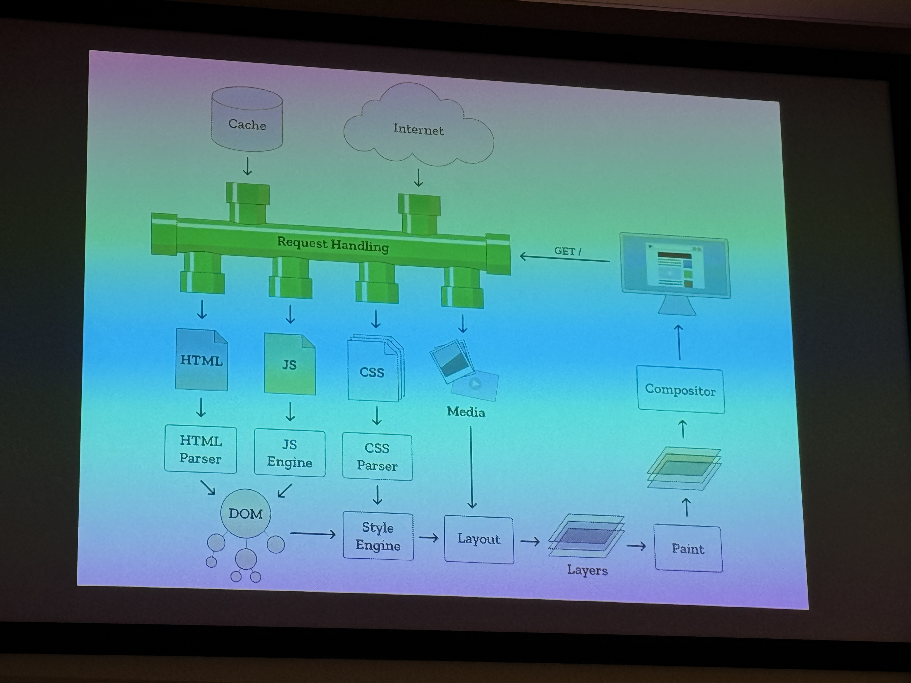

Een browser is een programma dat verbinding maakt met het web. Hij haalt websites op via het internet en interpreteert HTML, CSS en JavaScript zodat gebruikers pagina’s kunnen zien en ermee kunnen interacteren.
Websites bestaan uit drie belangrijke onderdelen:
De browser leest deze talen en zet ze om in een visuele en interactieve ervaring.
Wanneer je een website opent, gebeurt er onder water enorm veel voordat je daadwerkelijk iets ziet verschijnen.

De rendering engine is verantwoordelijk voor het parsen van HTML en CSS en het opbouwen van deze DOM- en AOM-structuren.
De rendering engine doet dus niet de interface of JavaScript-engine — dat zijn aparte onderdelen van de browser.
Niet elke browser gebruikt dezelfde rendering engine. De grootste en meest gebruikte is Blink, afkomstig uit het Chromium-project.
Andere belangrijke engines zijn:
Omdat veel browsers dezelfde rendering engine gebruiken, krijgen browsers vaak snel dezelfde nieuwe mogelijkheden.
Er bestaan ook nieuwe onafhankelijke browserprojecten zoals Flow en Ladybird.
Naast de rendering engine heeft een browser ook een JavaScript-engine nodig. Deze zorgt ervoor dat JavaScript daadwerkelijk uitgevoerd kan worden.
Niet alle browsers gebruiken dezelfde JavaScript-engine, maar iedere moderne browser heeft er wel één nodig.
“Browsers are the most hostile development platforms in the world.”
Deze uitspraak van Douglas Crockford verwijst naar de enorme complexiteit, backward compatibility en verschillen tussen browsers.
JavaScript kan het renderproces blokkeren. Daarom wordt vaak aangeraden om scripts slim te laden.
<script src>
→ voer direct uit en blokkeer parsing
<script defer src>
→ voer later uit, na HTML parsing
<script async src>
→ laad onafhankelijk zonder render blocking
Als JavaScript te vroeg geladen wordt, moet de browser wachten voordat de pagina verder opgebouwd kan worden.
Goede performance begint bij slimme keuzes tijdens het bouwen van een website.
Hoe complexer de rendering, hoe meer werk de browser moet doen.
Browsers zijn extreem gefocust op backward compatibility.
Als iets ooit in een browser heeft gewerkt, moet het blijven werken.
Daarom bestaat bijvoorbeeld de <!DOCTYPE html>-declaratie.
Deze voorkomt dat browsers in oude “quirks mode” gaan renderen.
Een <iframe> is een blok binnen een pagina waarin een andere webpagina
geladen kan worden.
Deze techniek stamt af van oudere technieken zoals framesets.
De ontwikkeling van browsers ging enorm snel.
Om websites te laden maakt de browser gebruik van verschillende internetprotocollen.
Samen zorgen deze protocollen ervoor dat data correct over het internet verstuurd wordt.
Browsers zijn veel complexer dan ze op het eerste gezicht lijken.